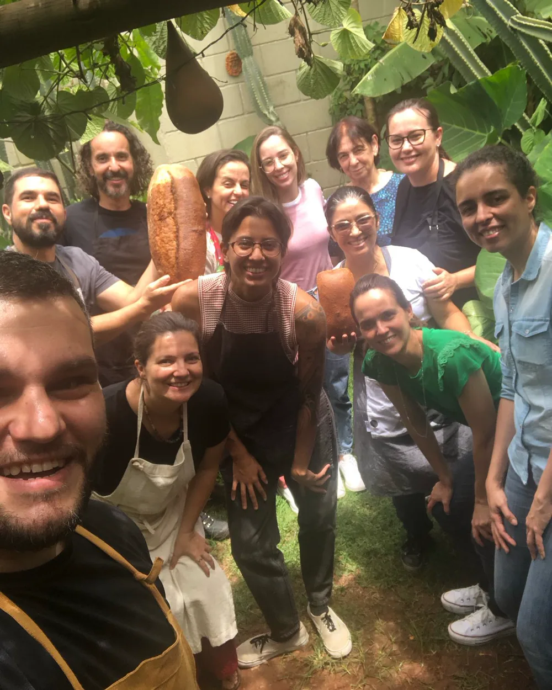

Curso de Pão para Iniciantes
Próxima turma: sábado, 29/08/2026 · 8h à s 13hver agenda →Sábado, das 8h à s 13h · Você vai aprender a criar, manter e cuidar do nosso fermento natural lÃquido, o fermento de garrafa; técnicas de mistura e assamento caseiro; e duas receitas: um Pão Branco feito com ele e outro com fermento biológico. Aula teórico-prática, com apostila em PDF, planilha de cálculo de receitas e degustação. Vamos botar a mão na massa?

O que você vai viver
Manhã de farinha e forno
- Vai preparar duas massas com as próprias mãos
- Vai comparar, na prática, a fermentação com o nosso fermento natural lÃquido e a fermentação biológica
- Vai entender o ponto da massa, as etapas de preparo e o que faz sentido para a sua rotina
- Vai levar os pães para assar em casa, com a sua assinatura
O que está incluso
- Apostila em PDF com teoria e receitas
- Grande café da manhã com nossos pães artesanais
- 1 fermentômetro pra usar em casa
- Formas simples e descartáveis para os pães
- Isca do nosso fermento natural lÃquido
- Todos os ingredientes e materiais pra fazer os pães
Traga sua bebida favorita
Se quiser, traga sua bebida favorita: um vinho, um espumante ou uma cerveja especial para acompanhar o café da manhã e a conversa. A bebida não está inclusa na oficina, mas combina com uma manhã gostosa de pão quentinho e gente reunida.
Onde é?
No quintal da nossa casa — o mesmo lugar onde nasceu a Pão de Verdade. Um ambiente de plantas, cerâmica, madeira, forno e calma, onde a gente aprende fazendo.
📠Rua Mário Pinto Sobrinho, 176 — Santa Mônica, Uberlândia (casa verde)
Pra quem é
Pra quem nunca fez Pão. Pra quem já tentou e travou. Pra quem quer um sábado diferente, aprendendo algo real. Crocante por fora, macio por dentro — Pão de verdade.
Pagamento seguro via Mercado Pago — Pix ou cartão em até 12x.
Garantir minha vaga — R$275 💬 Falar no WhatsAppQuer fazer Pão e Pizza no mesmo dia? Reserve também a vaga da Pizza (17h às 22h) — os dois cursos são no mesmo sábado, no mesmo lugar.
Turmas pequenas, vagas limitadas. Confirmação da inscrição após o pagamento.
Turmas de verdade, gente de verdade
Posts reais das nossas oficinas de Pão — direto do Instagram. Essa galera toda já aprendeu. Sua vez!
Carregando…
Ficou com alguma dúvida?
Preciso ter experiência para participar?
Posso fazer o curso de Pão e o de Pizza no mesmo dia?
Qual é a data e o horário?
Posso usar farinhas simples e ingredientes comuns?
O fermento de garrafa é o mesmo que levain?
Posso levar o fermento natural para casa?
Preciso de forno ou equipamentos profissionais?
Leve para casa mais do que uma receita
Na apostila, você também vai entender por que fazemos pão. E, no fim da manhã, leva duas massas, o fermento natural lÃquido e uma tradição que atravessa milhares de anos, passada de mão em mão.
Ficou alguma dúvida? Fale comigo